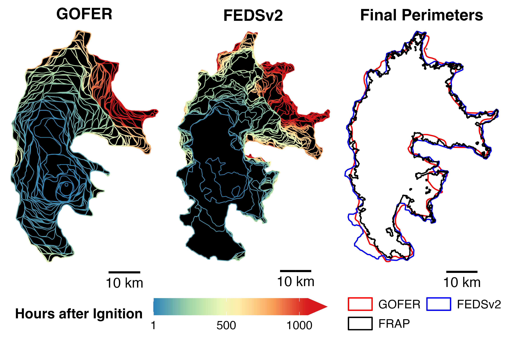
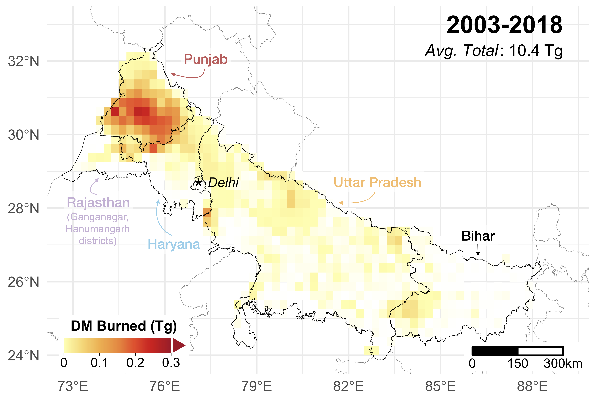

Comparison of the 2020 Creek Fire progression from GOES-Observed Fire Event Representation (GOFER: hourly, 2-km active fires) and Fire Event Data Suite (FEDS: 12-hourly, 375-m active fires). The final perimeters from GOFER and FEDS are compared to the high-resolution final perimeter from CAL FIRE's Fire and Resource Assessment Program (FRAP).
GOES-Observed Fire Event Representation
[Paper] [Dataset] [Code] [App]
The GOFER algorithm uses geostationary active fire observations from GOES-East and GOES-West (2 km at the equator) to map the hourly spatio-temporal evolution of large wildfires. Previous efforts in fire event tracking mainly relied on 12-hourly observations from VIIRS or MODIS, sensors aboard low-earth-orbit satellites. Critically, GOFER resolves the diurnal cycle of fire growth and periods of extreme fire growth. The GOFER product currently includes hourly perimeters, active fire lines, and fire spread rates for 28 wildfires over 50,000 acres from 2019-2021 in California. For all of our fire tracking datasets, please visit the UCI and NASA EIS websites.

Dry matter burned from post-monsoon agricultural fires, averaged across 2003-2018, in north India from the SAGE-IGP fire emissions inventory.
Survey Constraints on FRP-based AGricultural Fire Emissions in the Indo-Gangetic Plain
The SAGE-IGP algorithm combines household survey and satellite data to constrain post-monsoon agricultural fire emissions over north India from 2003-2018. SAGE-IGP addresses challenges such as missed fire detections due to persistent cloud/thick haze cover and burning outside of the satellite overpass times. Global fire emissions inventories can differ by an order of magnitude in this region. SAGE-IGP can be used as input in chemical transport models to evaluate air quality impacts from agricultural burning, which is an important seasonal source of pollution, and outperforms global inventories when the modeled PM2.5 estimates are compared against surface PM2.5 observations.